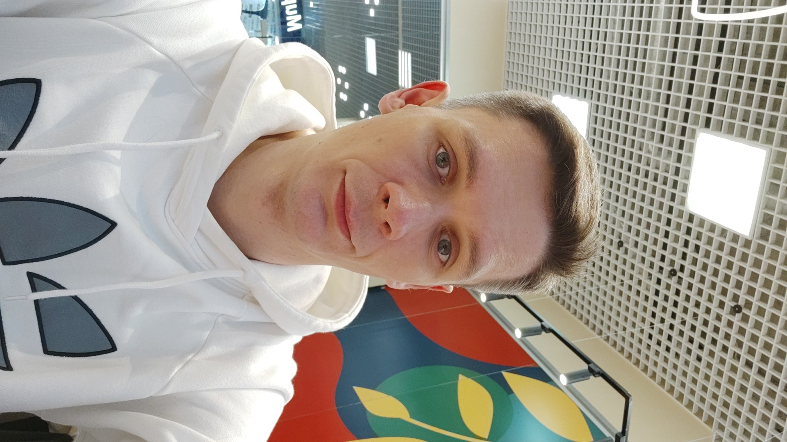

QA и IT
Тестирование веб‑продуктов, поиск дефектов, тест‑дизайн и понятная документация.
QA · цифровые проекты · литература
Проверяю цифровые продукты, создаю собственные проекты и превращаю идеи в истории.

01
Соединяю системное мышление с творческим. Мне одинаково интересно находить ошибки в продукте, собирать работающие интернет‑проекты и конструировать художественные миры.
02
Три области, в которых я работаю и развиваюсь.
Тестирование веб‑продуктов, поиск дефектов, тест‑дизайн и понятная документация.
Сайты, автоматизация рабочих процессов и практическое применение нейросетей.
Книги, сценарные концепции и миры на пересечении человеческой драмы и фантастики.
Есть идея или предложение?